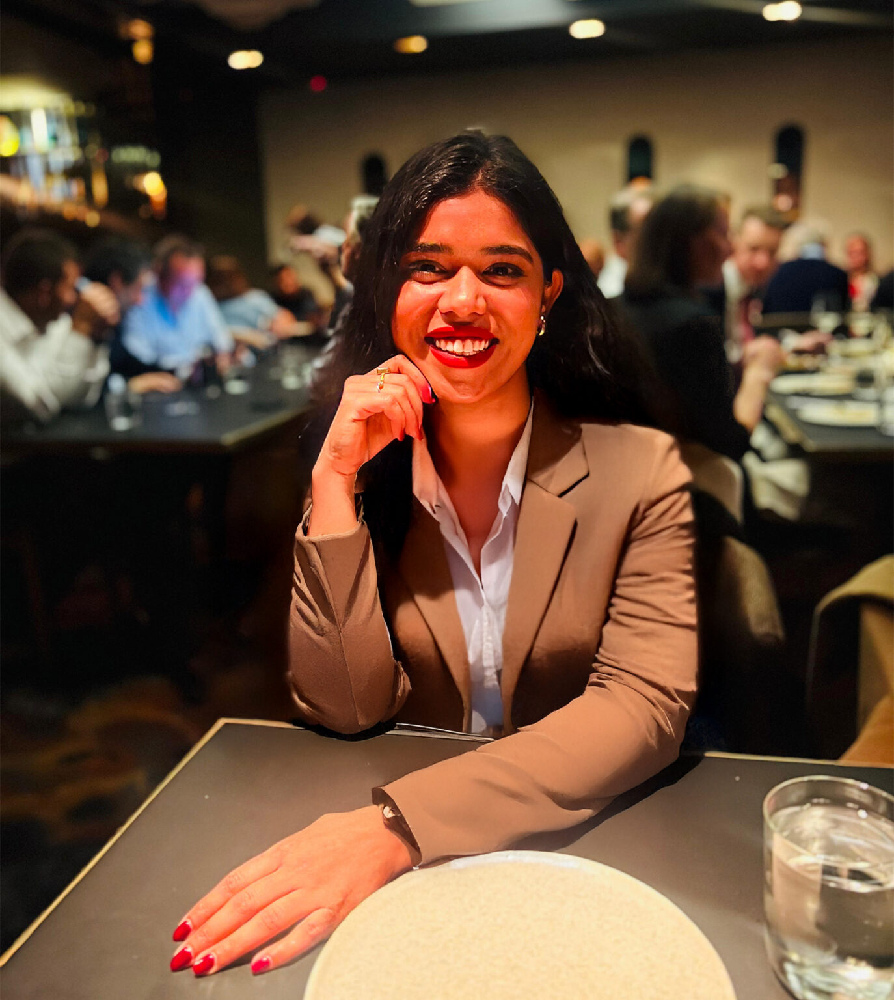

Meet Shree
A little about me, and why Clarvia exists.

A compassionate space, shaped by real experience.
I'm Shree, the founder of Clarvia Wellness. Across more than five years in healthcare, I have supported people through mental health concerns, acute and emergency healthcare experiences, alcohol and other drug challenges, and disability-related needs.
Those roles have shown me how important it is to feel genuinely heard—not reduced to a label, rushed through a conversation or expected to have everything figured out.
Clarvia grew from the wish to create a calmer kind of space: professional and grounded, while still warm, personal and practical.
My journey
Professional learning and personal perspective.
Moving to Australia as an international student brought its own periods of change, uncertainty, adaptation and growth. Those experiences continue to inform my respect for the many cultural, personal and practical factors that shape wellbeing.
I completed Psychology Honours studies and have worked across mental health, acute and emergency healthcare settings, AOD support and program facilitation, and previous disability support roles.
Mindfulness, meditation and my experiences with Art of Living have also shaped my personal understanding of reflection and self-awareness. In counselling, these practices are always optional and adapted to the person—not imposed as a universal answer.
Why Clarvia exists
Space to pause, understand and grow.
Clarvia brings together psychology-informed reflection, practical coping strategies, collaborative goals and a sincere respect for each person's pace. My role is not to dictate what your life should look like. It is to listen carefully, help you make sense of what is happening and work alongside you towards changes that feel meaningful.
The approach is compassionate and practical: we can notice patterns, build emotional awareness, explore different responses and identify supports that fit your real life.
Professional credentials
Clear and accurate professional information.
- Completed Psychology Honours studies.
- Registered with Ahpra as a nurse.
- More than five years of relevant healthcare experience.
- Experience in mental health, acute and emergency healthcare.
- Alcohol and other drug support, psychoeducation and group facilitation experience.
- Previous disability support work.
Important: Shree is not a registered psychologist, clinical psychologist or medical doctor. Clarvia's published services are limited to actual qualifications, competence, insurance and professional scope. Exact qualification titles and current registration details will be confirmed before launch.
A no-obligation beginning